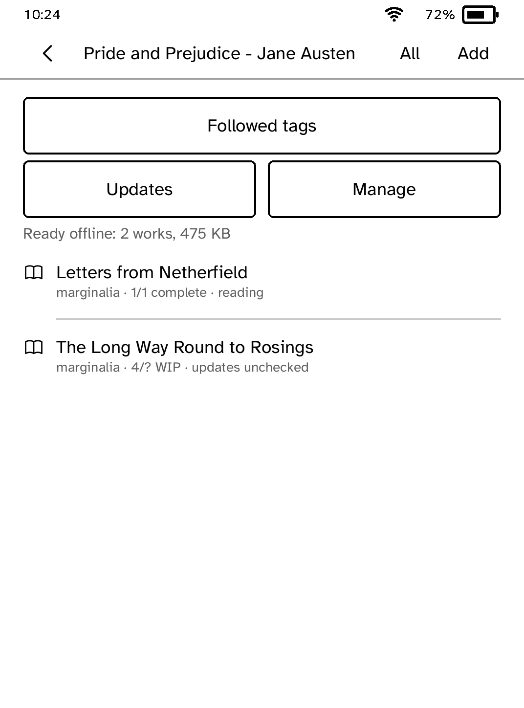
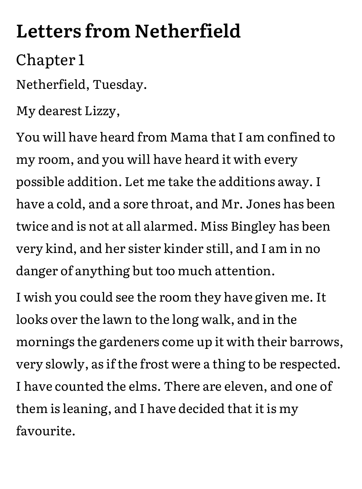
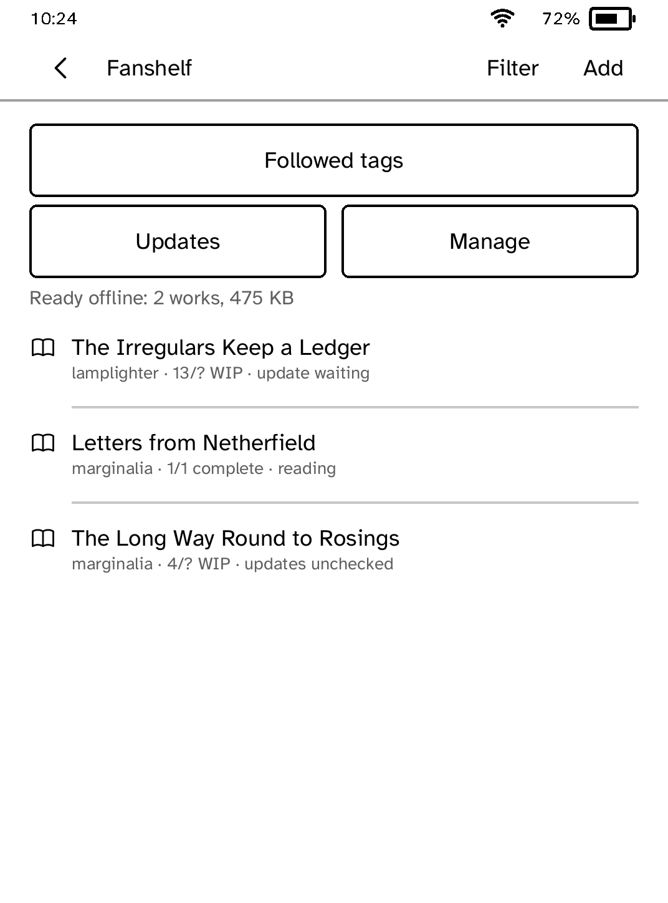

Fanshelf
Add AO3 works to a shelf, download them as EPUB and read them offline on your Kobo. Check works in progress for new chapters and follow tags. Fanshelf is unofficial and not affiliated with the Organization for Transformative Works.
- Version
- 0.3.13
- Needs
- Cobalt 0.3.34 or newer
- May use
- The network




New to Cobalt? Install it from your browser.
Plug your Kobo into this computer and install Cobalt in about a minute. After that, apps install over Wi-Fi.
Works in Chrome, Edge and Opera. Check your Kobo is supported.
Already have Cobalt? Link your Kobo.
On your Kobo, open App Store and tap Link a browser in the top bar, then Link a browser again. Scan the QR code, or enter the pairing code and verification key it shows.
Install on your Kobo
Your Kobo checks the app's signature before installing it.
New in 0.3.13
You can now remove a work from the shelf and unfollow a tag. Dates read the way you would say them, and a lookup or Update all without Wi-Fi now says so.
Want another Kobo app? Request it, suggest a feature or report a bug in r/CobaltForKobo.